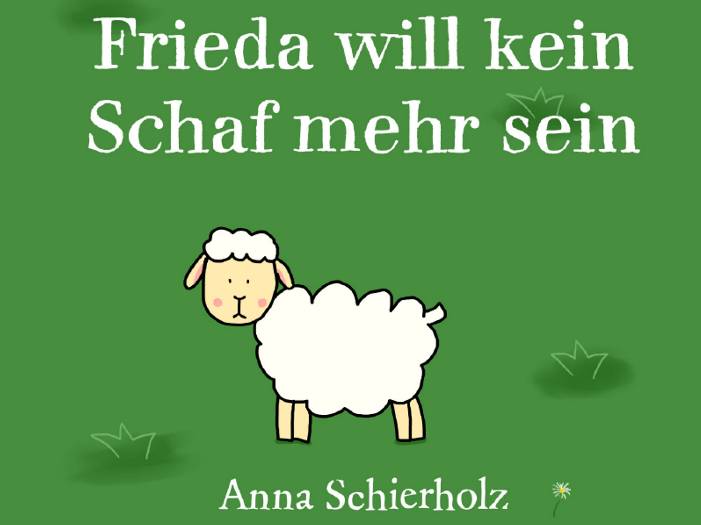
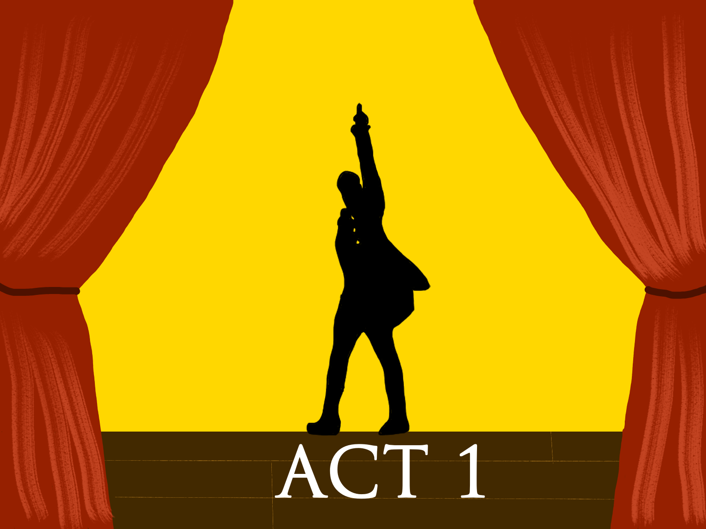

Neuste Blogbeiträge:

Ich habe ein Kinderbuch gemacht
25.07.2021
"Frieda will kein Schaf mehr sein" ist mein selbst geschriebenes und illustriertes Kinderbuch. Wie der Prozess von der Idee bis zum finalen Buch war, erfahrt ihr hier.

How to Bachelorarbeit
11.07.2021
Hier erfahrt ihr alles über den Prozess einer Bachelorarbeit, meine Erfahrungen und Tipps & Tricks.

Hamillessons: Erster Akt
20.05.2021
Herzlich Willkommen zu den Hamillessons, dem Crossover zwischen Hamilton und Ratschlägen zu Zeitmanagement, Organisation und mehr. Heute: Erster Akt